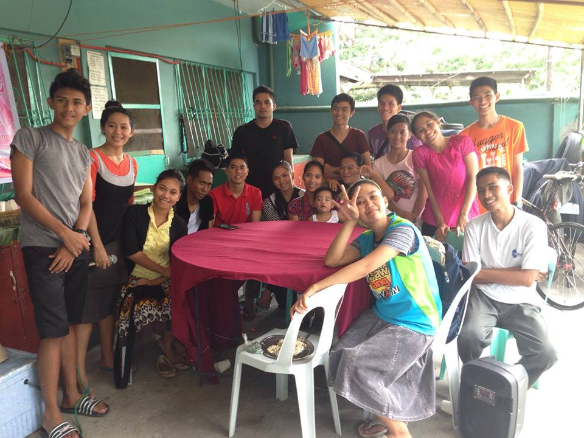
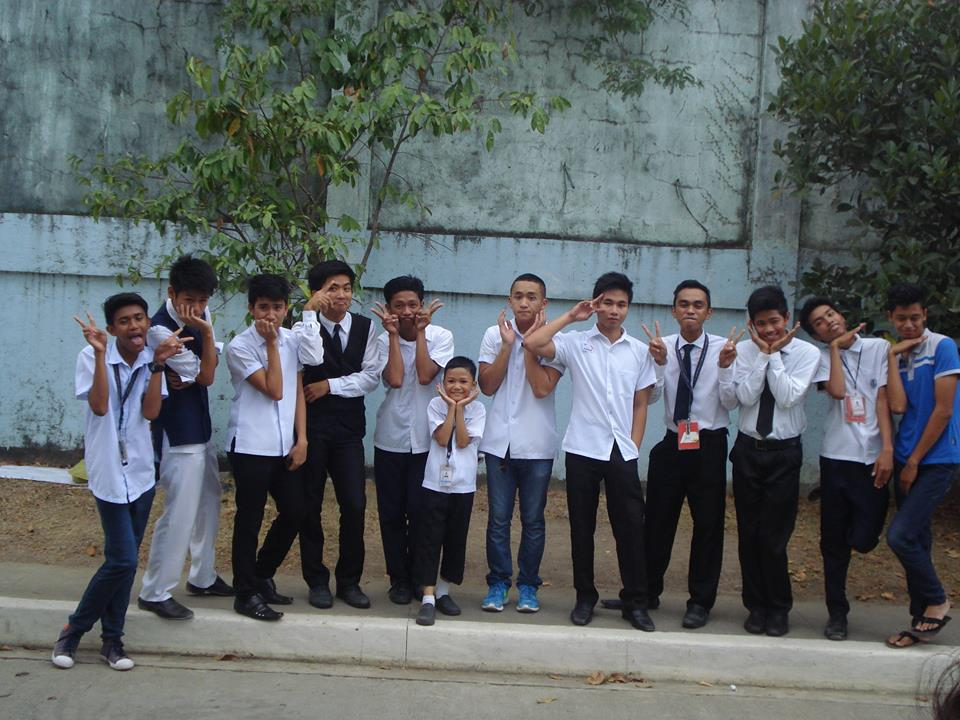
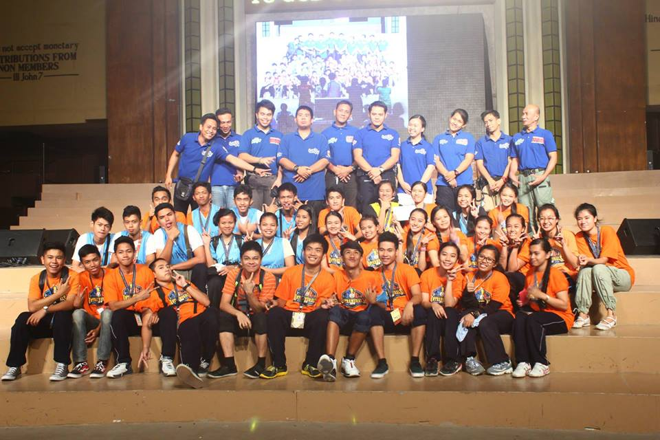
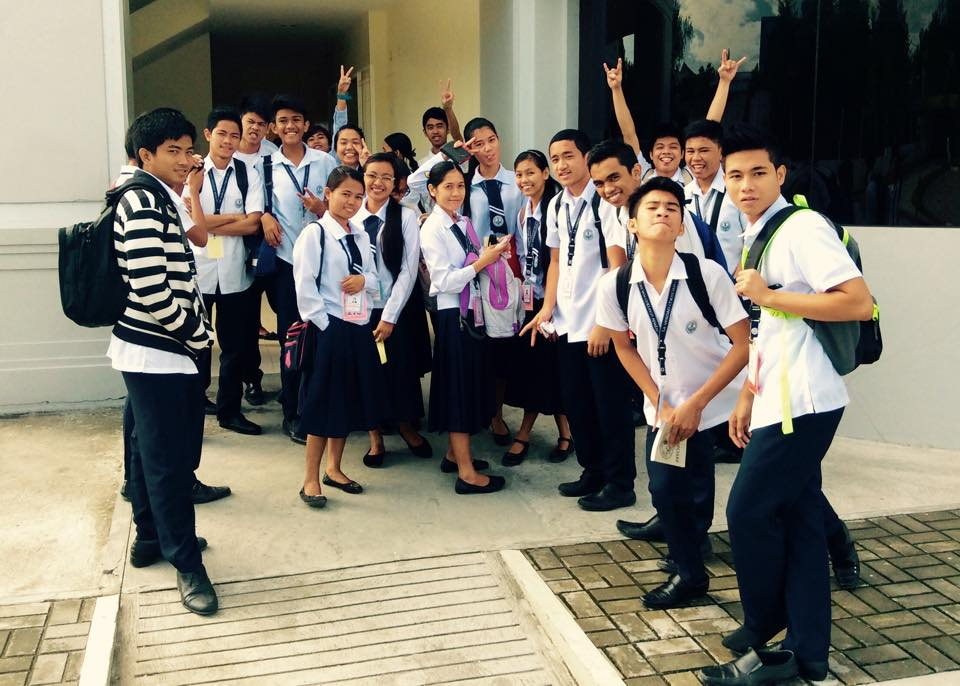

Back




About My Friends
So about my friends, I could tell that they are like my second family because when i feel alone or sad they are the one that comforts me. They are the one that helping me to solved or survive my problems ,They are the one that tells me what i can do. They are like my "true" brothers and sisters who supports me and always there for me.